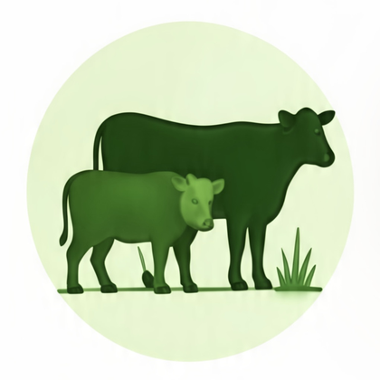
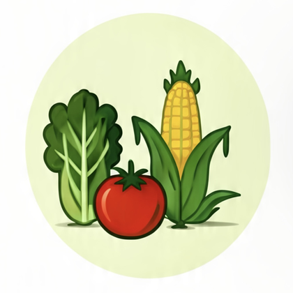
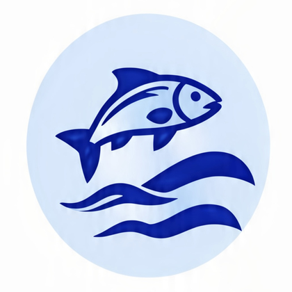
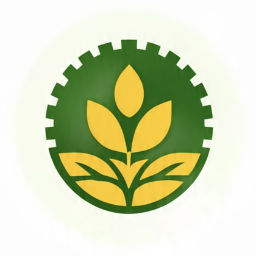
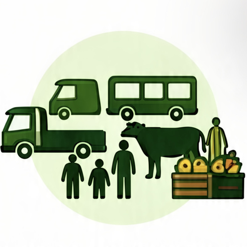
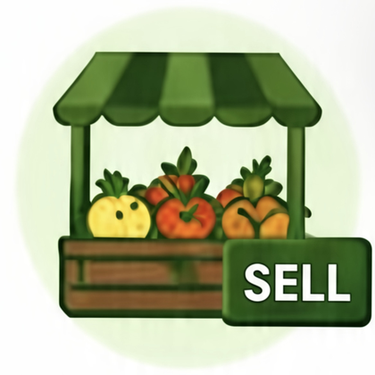

One platform for the whole harvest of farmer services.
From the field to the market, Digital Agriculture Philippines brings livestock, crops, fisheries, land reform and financial services into a single account — built for every farming and fishing community.
One platform. Many solutions. Stronger communities.
Choose a service to manage records, access support and connect with programs built for you.

Livestock
Manage livestock records, health, breeding and production.
Open service
Crops & Vegetables
Track crops, inputs, planting, harvest and farm management.
Open service
Fisheries
Fishery registration, monitoring, catch tracking and resources.
Open serviceDAR
Land distribution, beneficiaries, resources and support services.
Open service
LANDBANK
Loans, accounts, payments and financial services for farmers.
Open serviceGCash
Digital payments, wallet, bills and cash-in / cash-out services.
Open service
Rural Transport
Transport services for people, livestock and crops. Schedules, bookings and logistics support.
Open service
KADIWA Sell
Sell your produce and products. Market access, KADIWA goods, prices and availability.
Open service